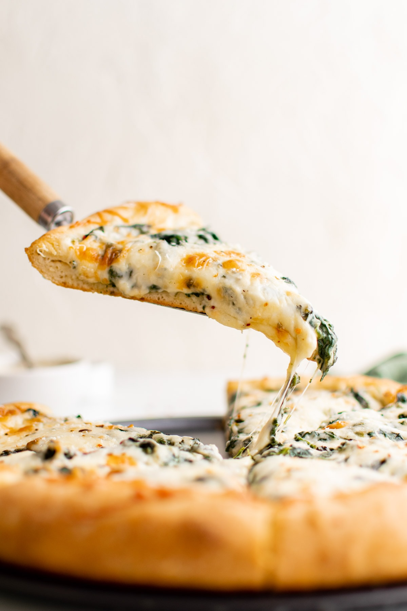

Spinach Alfredo Pizza

Cheesy Restaurant-like Spinach pizza
This pizza recipe is "fairly easy" to make! You can either buy premade crust or you can make you own crust which should taste many times better and offers a feeling of accomplishment after making all of it by yourself. The recipe will have a chewy crust that is also crispy on the bottom and will be very delicious by the end of this recipe!
Ingredients
- Yeast (homemade crust)
- Flour (homemade crust)
- Warm Water (homemade crust)
- Granulated Sugar (homemade crust)
- Olive Oil (homemade crust)
- Salt
- French Spinach
- Minced Garlic
- Red Pepper Flakes
- Mozarella Cheese
- Heavy Cream
- Whole Milk
- Freshly Grated Parmesan Cheese
- Butter
Steps
- Cook Garlic and Spinach - Cook the minced garlic and spinach in oilve oil until spinach is wilted.
- Make Alfredo Sauce - Melt butter and saute garlic, then whisk in flour until the flour is golden in color. Whisk the milk in cream and once it starts to thicken add Parmesan cheese and seasonings.
- Prep - Preheat the oven and grease a round pizza pan or sheet pan with olive oil or cooking spray.
- Make Dough - Make the pizza dough by combining warm water with the yeast and sugar in the bowl of a stand mixer. Let it stand until foamy, then add the flour, oil, and salt. Mix together using the dough hook until a smooth ball forms. Let rest for 5 minutes. No kneading necessary!
- Assemble Pizza - Press the dough into a large circle on the greased pan and roll the edges slightly to form the crust. Spread Alfredo sauce onto the crust, top with spinach, and sprinkle mozzarella.
- Bake Pizza - Bake until the crust is golden and the cheese is melted and bubbly.
- Serve! - Cool for a few minutes before cutting and serving. I like to sprinkle it with red pepper flakes and grated Parmesan.